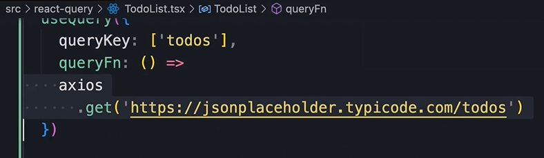

HOME
Fetching Data
Query Hook
Let's open back up the TodoList component.
To fetch data with react query, we use the
query hook, which is defined in
@tanstack/react-query...
queryKey
So we call this hook and then give it a config obj that will end up
with two propertys...
The first one is a our queryKey
The queryKey is just a unique identifier
for the query.
üí° It's used internally for caching.
So anytime we retrieve a piece of data from the backend, the data is
stored in the cache, and will be accessible via this key.
We set the key to an array of one, or more values.
üí° The first value is often a string that identifies the type of data
we want to store here.
We can also have more values, like maybe for storing completed
todos...
We could also use an obj with completed set to true...
No right or wrong
There is really no right or wrong when chosing a string or an object
for the key value.
How we want to structure the cache really depends on our application,
and it's requirements.
For now we want to stick to a single value...
But later in this section we will look at some more complicated
examples.
Query Function
The second property is the queryFn
This is the function that we use to fetch the data from the backend...
This funciton should return a promise that either resolves the data,
or throws an err.
So we pass an arrow func...
Then we use axios to fetch the data from the backend...

üí° Here we are using axios, but you can use the fetch api, or any HTTP
librarys.
React Query doesn't care how we fetch the data, it's only concerned
with managing, and caching it.
Storing the response
So, the get method returns a response object.
We don't want to store that whole response object, we want to store
the actual data that we get from the backend.
So, after get, we call then, and use the resonse to return res.data...
Separate the logic
We can also implement this logic outside of
our query...
Take a look at the signature of our function...
This function returns a promise of type any
Typescript doesn't like any types.üò°
We should be more specific and take advantage of Typescript.
We want our function to return a promise of todo array.
To achieve that, we use angle brackets when calling the get method to
specify a generic type argument...
Now if we look at the signature we see that it returns a Todo array...
üí° So, at runtime, React Query will call this function, and when the
promise is resolved we get an array of todos.
Then that array is stored in the cache against the queryKey.
the query object
So we call the query hook and get back a query object that we store
like this...
This query object has a bunch of
propertys like
data, error, isLoading, ect.
We'll talk about them as we make it through this section.
üëÅ‚Äçüó®For now, we are only interested in the data property.
So we can destructure it right away and grab the data property...
Quick Code Cleanup
With this implementation we no longer need the state vars for data and
errs...
You can also remove the entire effect hook...
We'll come back to the err handle later...
Rendering the data in markup
So instead of mapping todos, we map the data...
 If you don't like the name 'data' you can change it like this...
Then we can use our custom name...
If you don't like the name 'data' you can change it like this...
Then we can use our custom name...
We have an err saying todos is possibly undefined...
This is because the call to the backend could fail, in which case
todos would be undefined.
For fix we use optional chaining...
This is how we fetch data with React Query
Benefits of this implementation
üí° We get a number of benefits with this implementation.
Auto Retries:
If the call to the server fails, React Query will retry a couple more
times.
This is something we can configure, and we will cover it in more
detail later.
Auto Refetch
We can configure this query to auto refetch after an alotted amount of
time.
Caching
The first time we fetch the data it is stored in the cache, and will
be fresh for a certain period of time.
Then the next time we need the same piece of data, if it's still in
the cache, we don't go to the server, we can rapidly retrieve it from
the cache
So this is how we fetch data.
Next we will cover handling errors.